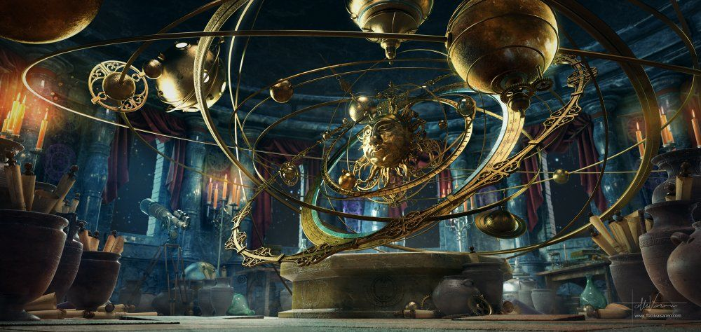

Interactive Treasure Game
"You seek the future. I will lift the curtain of time. It is your destiny"
The doors are sealed by an icyed web that clouds its carved reliefs. But upon Mara's announcement, the all-seeing eyes above glow, whisking away the icy wall as shooting stars illuminate the newly unlocked pathway as the doors. Once inside, the Hall of Promise lit by innumerable glowing stars and the temple's open roof reveals the endless night sky above, with a glowing, ethereal face of Mara at the far end of the hall. The room is illuminated with a dimly lit in purple and the ceiling above twinkles with optic stars. It tilts upward, directing your eyes away from the dark scrims, and towards the dazzling star field.
